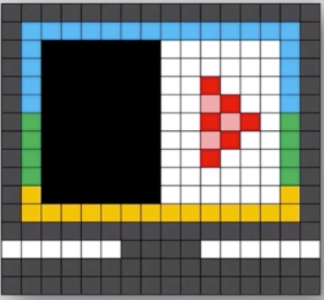

信息压缩
信息压缩举例
图片压缩
如图所示为分辨率为16x16，16色的位图。对其压缩的方法为：以“行”为单位，用“相同颜色连续出现的次数 + 颜色名称”来表示。当使用五位二进制表示颜色连续出现的次数，每种颜色用四位二进制表示，则第二行和第三行经过压缩之后占多少个二进制位？
解析：
第二行可以被描述成：“1灰14蓝1灰”，总共需要（5+4)*3 = 21位存储
第三行可以被描述成：“1灰1蓝6黑6白1蓝1灰”，总共需要（5+4)*6 = 42位存储
有损压缩和无损压缩
无损压缩
无损压缩：对压缩后的数据进行还原，还原后的数据和原来的数据完全相同。
常用方法：WinZip, WinRAR
有损压缩
有损压缩：压缩过程中会损失一定的信息，压缩后的数据无法还原成原始数据。
常见压缩格式：JPG、MP3、MPEG
Note
只能适用于无损压缩的格式：TXT, DOC, XLS, PPT, VB, JAVA…
可以采用有损压缩的格式：BMP, WAV, AVI…
总结：只有多媒体文件（图片、音频、视频）才能进行有损压缩！除多媒体文件之外的所有其它文件必须进行无损压缩！